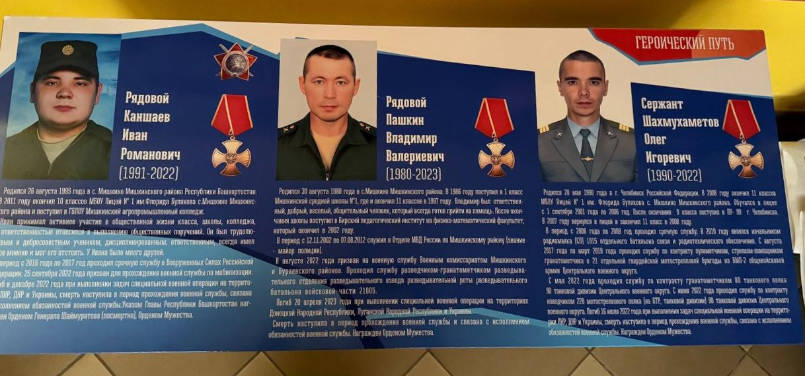
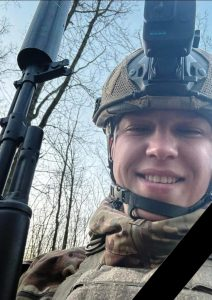
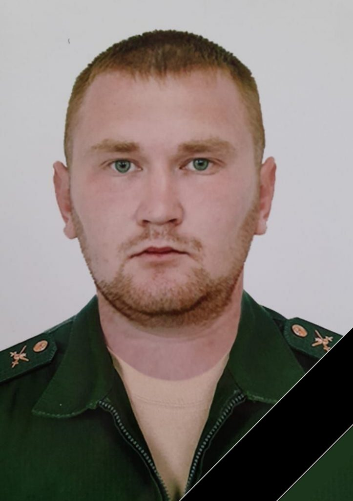
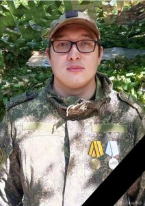
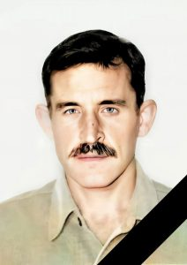
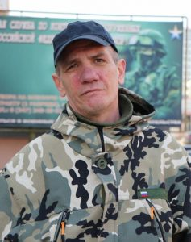
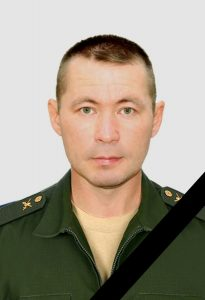
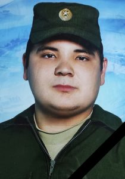
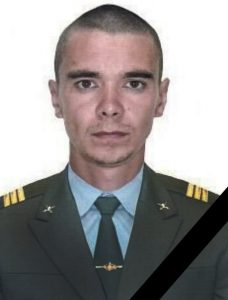
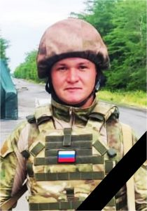

Описание
Люди, которыми мы гордимся. Люди, которых мы всегда будем помнить и уважать
Наши Герои
-

-
Кайбышев Артур Эльвирович
Гвардии рядовой Кайбышев Артур Эльвирович родился 30 июля 1997 года в с. Мишкино Мишкинского района Республики Башкортостан. С 1 по 9 класс обучался в МБОУ Лицей №1 с. Мишкино. Еще в школе Артур проявил себя как воспитанный и прилежный ученик. Обучался на «хорошо» и «отлично». Артур с младших классов стремился к знаниям, обладал хорошей памятью и сообразительностью, активно участвовал в художественной самодеятельности и никогда не отказывался от поручений классного руководителя и других учителей. Учителя вспоминают его, как одного из самых ярких учеников среди сверстников, ученики, как самого веселого и жизнерадостного среди всех. Всегда жизнелюбивый, находчивый, упорный он притягивал людей своим оптимизмом и энергией, готовностью своевременно прийти на помощь. Окружающих всегда привлекало его глубокое уважительное отношение к старшим, к семье. Заботливый, внимательный, трудолюбивый с ранних лет он помогал своей бабушке и искренне ценил ее. Именно бабушка дала Артуру достойное воспитание. Общаясь со сверстниками, очень легко находил новых знакомых. В 2013 году поступил в АН ПОО «Бирский кооперативный техникум». С 14.12.2015 г. по 07.12.2016 г. проходил службу по призыву в Вооруженных силах Российской Федерации в должности разведчика войсковой разведки.
Работал в организациях г. Уфы. 25 сентября 2022 года призван для прохождения военной службы по частичной мобилизации. Награжден медалью 428 МСП «За освобождение Донбасса», медалью «За воинскую доблесть 2 степени». Погиб 26 ноября 2024 года в н.п. Погребки Суджанского района Курской области при выполнении задач в ходе специальной военной операции. Смерть наступила в период прохождения военной службы и связана с исполнением обязанностей воинской службы. Холост, детей нет.
-

-
Мишин Александр Юрьевич
Рядовой Мишин Александр Юрьевич родился 12 сентября 1996 года в с. Мишкино Мишкинского района Республики Башкортостан.
С 2003 года обучался в МБОУ Лицей №1 села Мишкино Мишкинского района. Еще в школе проявил себя как воспитанный и прилежный ученик. С младших классов стремился к знаниям, обладал хорошей памятью и сообразительностью, активно участвовал в художественной самодеятельности и никогда не отказывался от поручений классного руководителя и других учителей. Учителя вспоминают его как одного из самых ярких учеников среди сверстников, ученики как самого веселого и жизнерадостного среди всех. Всегда жизнелюбивый, находчивый, упорный он притягивал людей своим оптимизмом и энергией, готовностью своевременно прийти на помощь. Окружающих всегда привлекало его глубокое уважительное отношение к старшим, к семье. Заботливый, внимательный, трудолюбивый с ранних лет он помогал родителям и искренне ценил мнение своего старшего брата Алексея. Именно в семье Александр получил достойное воспитание. Общаясь со сверстниками, очень легко находил новых знакомых. В 2012 году Александр окончил 9 классов и поступил в Бирский медико-фармацевтический колледж. С 08.07.2017 г. по 13.06.2019 г. проходил службу по контракту, в т.ч. в период с 14.08.2017 г. по 25.09.2018 г. выполнял задачи по нормализации обстановки, законности и правопорядка на территории Республики Таджикистан. Работал в северных регионах страны.
31 января 2025 года поступил на военную службу по контракту. Службу проходил на должности стрелка-сапера 2 отделения мотострелкового (штурмовое) мотострелкового взвода (штурмовой) (в роте – 3) мотострелковой роты (штурмовая) (в батальоне – 4) мотострелкового батальона.
Погиб 17.02.2025 г. у н.п. Лысовка Красноармейского района Донецкой Народной Республики в результате полученных травм в ходе специальной военной операции Вооруженных Сил Российской Федерации на территории Луганской Народной Республики, Донецкой Народной Республики и Украины по денацификации и демилитаризации Украины. Холост.
-

-
Шамарзанов Роман Владимирович
Младший сержант Шамарзанов Роман Владимирович родился 19 января 1995 г. в с. Мишкино Мишкинского района Республики Башкортостан.
В 2001 году Роман поступил в 1 класс МБОУ Лицей №1 им. Ф.Булякова с.Мишкино. В 2010 году перешел в МБОУ СОШ №2 с.Мишкино, где обучался до 11 класса.
Роман добросовестно относился к выполнению общественных поручений, был трудолюбивым, воспитанным, интеллигентным, тактичным, коммуникабельным человеком. По характеру был уравновешенным, быстро отзывался на окружающие события, был спокойным и доверчивым, доброжелательным, обладал чувством собственного достоинства. Принимал активное участие в общественной жизни класса, занимался спортом, был награжден грамотами за участие в различных конкурсах и спортивных мероприятиях. По отношению к педагогам был тактичным и деликатным. Отношения с одноклассниками и сверстниками были ровными, дружескими, доброжелательными, всегда был готов прийти на помощь.
После окончания школы Роман поступил Башкирский государственный аграрный университет в механический факультет и закончил его в 2017 году.
Работал продавцом-консультантом в магазине «Саморезик» с. Мишкино.
25 сентября 2022 года был призван в рамках частичной мобилизации. Службу проходил в должности стрелка-помощника гранатометчика мотострелкового отделения 428 мотострелкового полка 90 танковой дивизии.
Награжден медалью «За отвагу», медалью «За боевые отличия» (Приказ Министерства обороны РФ №131669 от 10.08.2023г.).
Погиб 30.09.2024 в Донецкой Народной Республике при выполнении задач в ходе специальной военной операции. (г. Украинск).
Холост, детей нет.
-

-
Ильтубаев Эдуард Иргубаевич
Ильтубаев Эдуард Иргубаевич родился 02 марта 1964 года в с.Мишкино Мишкинского района Башкирской АССР. Получил общее среднее образование в Мишкинской средней школе, после окончания школы в 1981 г. поступил в Бирский педагогический институт на факультет иностранных языков. В 1984-1986 гг. проходил срочную службу по призыву на должности авиационного механика. В 1989 г окончил Бирский педагогический институт по специальности учитель французского и немецкого языка. С 1989 г. по 1994 г. работа учителем иностранного языка в Новотроицкой школе. Затем работал художником-оформителем в Мишкинском РДК, в последние годы работал вахтовым методом в различных регионах страны. С 14 марта 2024 года проходил военную службу по контракту на должности наводчика ПКП мотострелкового отделения мотострелкового взвода мотострелковой роты мотострелкового батальона. Погиб 14 апреля 2024 года при выполнении специальных задач в ходе специальной военной операции Вооруженных Сил Российской Федерации на территории Украины, Донецкой Народной Республики, Луганской Народной Республики. Награжден орденом Мужества (посмертно). Разведен, имеет сына.
-

-
Ханов Рамиль Муллаханович
Родился 01.05.1974 г. Погиб 29.03.2024.г.
-

-
Пашкин Владимир Валериевич
Рядовой Пашкин Владимир Валериевич родился 30 августа 1980 года в с.Мишкино Мишкинского района. В 1986 году поступил в 1 класс Мишкинской средней школы №1, где и окончил 11 классов в 1997 году. Учился очень хорошо, при выпуске в 1997 году награжден похвальными грамотами по физике и математике. Характеризовался как ответственный, добрый, веселый, общительный человек, который всегда готов прийти на помощь. После окончания школы поступил в Бирский педагогический институт на физико-математический факультет, который окончил в 2002 году. В период с 12.11.2002 по 07.08.2012 служил в Отделе МВД России по Мишкинскому району (звание — майор полиции). Затем работал вахтовым методом на Севере в различных организациях. В августе 2022 года призван на военную службу Военным комиссариатом Мишкинского и Бураевского районов. Проходил службу разведчиком-гранатометчиком разведывательного отделения разведывательного взвода разведывательной роты разведывательного батальона войсковой части 21005. Погиб 20 апреля 2023 года при выполнении специальной военной операции на территориях Донецкой Народной Республики, Луганской Народной Республики и Украины. Смерть наступила в период прохождения военной службы и связана с исполнением обязанностей военной службы. Женат, имеет 3 детей.
-

-
Каншаев Иван Романович
Каншаев Иван Романович родился 26 августа 1995 года. После окончания Лицея № 1 им.Флорида Булякова с.Мишкино он поступил в Мишкинский агропромышленный колледж. Его любили одноклассники, одногруппники и учителя за лёгкий характер, доброту и отзывчивость. Он умел дружить, умел молча, не дожидаясь просьбы, прийти на помощь и не ждать награды, умел радоваться успехам товарищей, как своим собственным. После прохождения срочной службы в Вооруженных Силах Российской Федерации Иван устроился на работу вахтовым методом. Однако потом он решил работать в родном селе, и был принят в филиал ПАО «Газпром газораспределение Уфа» в г. Бирске (Мишкинская комплексная служба). Руководство и коллеги вспоминают о нем как об исполнительном, пунктуальном, ответственном и умеющем работать в команде сотруднике. В сентябре 2022 года был призван для прохождения военной службы по мобилизации. Иван погиб в декабре 2022 года при исполнении воинских обязанностей. Он погиб, защищая Родину и весь русский мир от нацизма.
-

-
Шахмухаметов Олег Игоревич
Шахмухаметов Олег Игоревич родился 28 мая 1990 года. После окончания Лицея № 1 им.Флорида Булякова с.Мишкино Олег был призван на срочную службу в Вооруженные Силы Российской Федерации. Его родные, близкие, друзья и знакомые ценили Олега за доброту, чуткость, отзывчивость и неравнодушие к чужим проблемам. Он был мужественным человеком и настоящим патриотом. Поступив на военную службу по контракту, Олег честно и доблестно служил Родине. Наш земляк героически погиб, отстаивая право людей на мирную жизнь, до последнего дня оставаясь верным воинской присяге и долгу.
-

-
Ахматзянов Марсель Фадисович
Ефрейтор контрактной службы Ахматзянов Марсель Фадисович Родился 2 ноября 1990 года в с.Мишкино Мишкинского района Республики Башкортостан. В 2007 году окончил 9 классов Мишкинской средней школы №1. После окончания школы поступил в Бирский кооперативный техникум. С мая 2010 года по май 2011 года проходил срочную службу в Вооруженных Силах Российской Федерации. С 2012 года поступил на военную службу по контракту в Вооруженные Силы Российской Федерации. Служил в отряде специального назначения Федеральной службы войск национальной гвардии Российской Федерации, был в командировках в Чеченской Республике, Сирийской Арабской Республике. Награжден медалью «Генерал А.П. Ермолов» (приказ Атамана Терского казачьего войска от 21.04.2013 г. № 172), медалью «Участнику военной операции в Сирии» (приказ Министра обороны Российской Федерации от 11.12.2018 г. № 885), нагрудным знаком «За отличие в службе в особых условиях» (приказ Росгвардии от 26.03.2019 г. № 187 л/с), медалью «За отличие в службе» III степени (приказ Федеральной службы войск национальной гвардии Российской Федерации от 19.03.2021 г. №105 л/с), памятной медалью «Участнику специальной военной операции» (приказ командующего СКО ВНГ РФ от 25.11.2022 г. № 145 л/с). Погиб 2 октября 2023 года при выполнении боевых задач в районе выполнения специальной военной операции на территории Донецкой Народной Республики, Луганской Народной Республики, Запорожской и Херсонской областей и Украины. Холост, детей не имеет.